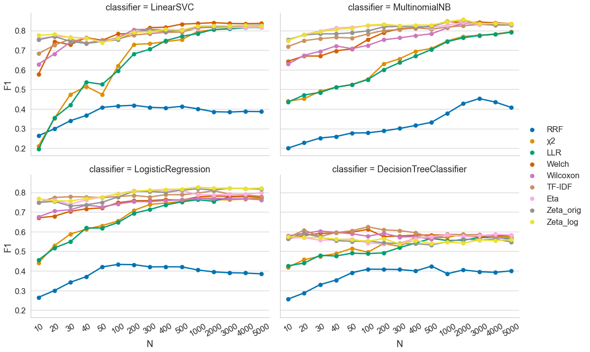

This paper concerns an empirical evaluation of nine different measures of distinctiveness or ‘keyness’ in the context of Computational Literary Studies. We use nine different sets of literary texts (specifically, novels) written in seven different languages as a basis for this evaluation. The evaluation is performed as a downstream classification task, where segments of the novels need to be classified by subgenre or period of first publication. The classifier receives different numbers of features identified using different measures of distinctiveness. The main contribution of our paper is that we can show that across a wide variety of parameters, but especially when only a small number of features is used, (more recent) dispersion-based measures very often outperform other (more established) frequency-based measures by significant margins. Our findings support an emerging trend to consider dispersion as an important property of words in addition to frequency.
1 Introduction
Edward Tufte, the pioneer of data visualization, famously wrote: “At the heart of quantitative reasoning is a single question: Compared to what?” (Tufte 1990, 67). And indeed, any number or value established in some way can only really be endowed with meaning when it is placed in the context of other, comparable numbers or values. One may think of several fundamental strategies for such a contextualization of numbers. Taking the same measurement at different times is one such strategy and taking the same measurement in different subsets of a dataset is another. Each of these strategies comes with typical statistical operations for the comparison of the values, such as regression to determine a trend over time or a test of statistical significance to compare the distributions of values in two subsets of a dataset (Diez, Cetinkaya-Rundel, and Barr 2019).
What the above observation points to is that comparison is a fundamental operation in many domains operating with numerical values. This is also true, however, for many text-based domains of research, whether statistically-oriented or not (Klimek and Müller 2015). The research we report on here brings both strands together in the sense that it is located at the intersection of literary studies and statistics. More precisely, our research is concerned with modeling, implementing, evaluating and using statistical measures of comparison of two or several groups of texts. The measures we focus on are used to identify characteristic or distinctive features of each group of texts in order to gain an evidence-based understanding of the specific contents, style and/or structure of these groups of texts. As we describe below, such measures have been developed in domains such as Information Retrieval (IR), Corpus and Computational Linguistics (CL), or Computational Literary Studies (CLS). In our research, we bring together knowledge and insight from these domains with the general objective of fostering a better understanding of measures of distinctiveness.
The research we report on in this contribution is set in the wider context of our research into measures of distinctiveness for comparison of groups of texts. Previously, we have worked on the issue of qualitative validation of measures of distinctiveness (see (Schröter et al. 2021). We have also implemented a wide range of measures of distinctiveness in our Python package pydistinto.1 With the current contribution, we focus on the step of evaluating the performance of a substantial range of such measures using a downstream classification task.
Our paper is structured as follows: First, we summarize related work (a) describing different measures of distinctiveness and (b) specifically comparing several measures of distinctiveness to each other (Section 2). We go on to describe the different corpora we have used for our study (Section 3) as well as the methods used to perform the evaluation task and to analyze the results (Section 4). We then discuss the results we have obtained, first in a single-language setting, then in a multi-language setting (Section 5). We close our contribution by summarizing our key findings and describing possible future work (Section 6).
2 Related Work
3 Corpora
For our analysis we used nine text collections. The first two corpora consist of contemporary popular novels in French published between 1980 and 1999 (160 novels published in the 1980s and 160 novels published in the 1990s). To enable the comparison and classification of texts, we designed these custom-built corpora in a way that they contain the same number of novels for each of four subgroups: highbrow novels on the one hand, and lowbrow novels of three subgenres (sentimental novels, crime fiction and science fiction) on the other. The texts in these corpora are, for obvious reasons, still protected by copyright. As a consequence, we cannot make these corpora freely available as full texts. We have published them, however, in the form of a so-called “derived text format” (Schöch et al. (2020), Organisciak and Downie (2021)) suitable for use with our Python library and devoid of any copyright protection.2
Another group of text corpora that we used for our analysis consists of seven collections of novels in seven different European languages taken from the (ELTeC) produced in the COST Action Distant Reading for European Literary History (see Burnard, Schöch, and Odebrecht (2021); Schöch et al. (2021)).3 We reuse the English, French, Czech, German, Hungarian, Portuguese and Romanian corpora. From each of these corpora, we selected a subset of 40 novels: 20 novels from the period from 1840 to 1860 and 20 novels from the period from 1900 to 1920.
Table 1: Overview of the corpora used in our experiments.
name
size (million words)
standard deviation
mean
types
authors
fra_80s
8.83
27,161
55,225
119,775
120
fra_90s
8.48
26,976
53,010
111,501
124
ELTec_cze
1.98
24,734
49,642
163,900
33
ELTec_deu
4.62
101,915
115,531
158,726
30
ELTec_eng
4.66
75,672
116,477
53,285
35
ELTec_fra
3.31
86,926
82,802
65,799
37
ELTec_hun
2.44
40,513
61,055
258,026
36
ELTec_por
2.33
38,787
58,325
95,572
34
ELTec_rom
2.41
36,493
60,395
156,103
37
The Table 1 gives a short overview of the measures of distinctiveness implemented in our Python library, along with their references and information about studies in which they were evaluated. Under the heading `Type of measure’, we very roughly characterize the underlying kind of quantification of the unit of measurement. As all the measures have different mathematical calculations and describing all of them in detail goes beyond the scope of this paper, we propose this typology as a brief and simplified review that summarizes the key characteristics of the implemented measures.
4 Results
4.1 Classification of French Popular Novel Collections (1980s and 1990s)
Figure 1 shows the classification results of the 1980s-corpus. The Decision Tree Classifier has a clearly lower performance than the other three classifiers. The other three classifiers produce better results with similar trends of F1-scores across different measures. Therefore, in our further experiments we focus on results based on one classifier, namely the Multinominal NB.4 The classification results of the 1990s-corpus, for this preliminary test, are very similar to the results presented in Figure 1 and thus are not shown here.

Figure 1: Overall Classification results
Figure 2 shows the F1-macro score distribution from 10 fold cross-validation for classification of the French novel segments of the 1980s-dataset. The setting of \(N\) varies from 10 to 5000. The baseline is visualized as a green line in the plot. It corresponds to the average of the classification results based on N * 8 random words, resampled 1000 times.
Burnard, Lou, Christof Schöch, and Carolin Odebrecht. 2021. “In Search of Comity: TEI for Distant Reading.”Journal of the Text Encoding Initiative, no. 14. https://doi.org/10.4000/jtei.3500.
Diez, David, Mine Cetinkaya-Rundel, and Christopher D. Barr. 2019. OpenIntroStatistics. 4th ed. OpenIntro. https://www.openintro.org/book/os/.
Klimek, Sonja, and Ralph Müller. 2015. “Vergleich Als Methode? ZurEmpirisierung Eines Philologischen Verfahrens Im Zeitalter Der DigitalHumanities.”Journal of Literary Theory, no. 9, 1. https://doi.org/10.1515/jlt-2015-0004.
Organisciak, Peter, and J. Stephen Downie. 2021. “Research Access to in-Copyright Texts in the Humanities.” In Information and KnowledgeOrganisation in DigitalHumanities, 157–77. Routledge. https://doi.org/10.4324/9781003131816-8.
Schöch, Christof, Frédéric Döhl, Achim Rettinger, Evelyn Gius, Peer Trilcke, Peter Leinen, Fotis Jannidis, Maria Hinzmann, and Jörg Röpke. 2020. “Abgeleitete Textformate: Text Und DataMining Mit Urheberrechtlich Geschützten Textbeständen.”Zeitschrift Für Digitale Geisteswissenschaften. https://doi.org/10.17175/2020_006.
Schöch, Christof, Roxana Patras, Tomaž Erjavec, and Diana Santos. 2021. “Creating the EuropeanLiteraryTextCollection (ELTeC): Challenges and Perspectives.”Modern Languages Open, no. 1: 1–19. https://doi.org/10.3828/mlo.v0i0.364.
Schröter, Julian, Keli Du, Julia Dudar, Cora Rok, and Christof Schöch. 2021. “From Keyness to Distinctiveness – Triangulation and Evaluation in ComputationalLiteraryStudies.”Journal of Literary Theory (JLT), no. 9, 1–2: 81–108. https://doi.org/10.1515/jlt-2021-2011.
Tufte, Edward R. 1990. Envisioning Information. Graphics Press.
8 Appendix A: General remarks about this test
8.1 Notes
Impressive overall!
The mode of testing is installing Quarto locally and using VS Code to edit files. How this would work as a collaborative, online editor is another question. Github integration would clearly be an option, but then it is not concurrent editing, but push/pull to a repo: doable, but with its own issues.
[SOLVED] How can I place the appendices after the references? => Use the refs attribute (see above).
Many more options for metadata and formatting in different output formats.
Der “folded code” im HTML-Beispiel ist besonders cool (geht im PDF naturgemäß nicht). Noch coller ist allerdings die Notebook-Version, die dann auf einem Localhost-Port läuft.
8.2 The equations example
Einstein’s theory of special relatively that expresses the equivalence of mass and energy:
@article{du2022,
author = {Keli Du and Julia Dudar and Christof Schöch},
title = {Evaluating {Measures} of {Distinctiveness}},
journal = {Journal of Computational Literary Studies},
date = {2022-11-27},
url = {https://jcls.io/article/id/102/},
doi = {10.48694/jcls.102},
langid = {en},
abstract = {This paper concerns an empirical evaluation of nine
different measures of distinctiveness or “keyness” in the context of
Computational Literary Studies. We use nine different sets of
literary texts (specifically, novels) written in seven different
languages as a basis for this evaluation. The evaluation is
performed as a downstream classification task, where segments of the
novels need to be classified by subgenre or period of first
publication. The classifier receives different numbers of features
identified using different measures of distinctiveness. The main
contribution of our paper is that we can show that across a wide
variety of parameters, but especially when only a small number of
features is used, (more recent) dispersion-based measures very often
outperform other (more established) frequency-based measures by
significant margins. Our findings support an emerging trend to
consider dispersion as an important property of words in addition to
frequency.}
}
For attribution, please cite this work as:
Keli Du, Julia Dudar, and Christof Schöch. 2022. “Evaluating
Measures of Distinctiveness.”Journal of Computational
Literary Studies, November. https://doi.org/10.48694/jcls.102.
![]()